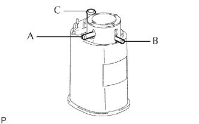

BỘ LỌC KHÍ XẢ > KIỂM TRA |
| 1. KIỂM TRA BỘ LỌC THAN HOẠT TÍNH |
|  |
Kiểm tra hoạt động của bộ lọc than hoạt tính.
| Điều kiện | Điều kiện tiêu chuẩn |
| Bịt cổng B và C, sau đó cấp chân không vào cổng A | Không rò rỉ |
| Bịt cổng C, sau đó thổi khí vào cổng A | Khí chạy từ B |
| Khí thổi vào cổng A | Khí chạy từ cả hai cổng B vàC |